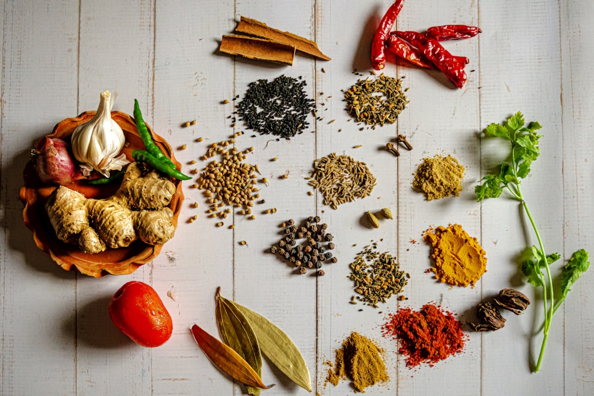

Ginger is gastronomy's most versatile, chemically dynamic rhizome. When sliced raw, freshly harvested ginger releases an invigorating, razor-sharp pungency dominated by [6]-gingerol. Yet, when subjected to slow wood-fired roasting or simmering in botanical syrups, this pungent bite undergoes an extraordinary molecular transformation into warm, fragrant, and comforting flavor compounds.
Unlike simple chile peppers whose capsaicin remains stubbornly static under heat, the active phenolics within Zingiber Officinale Rhizomes undergo continuous thermal degradation, dehydration, and retro-aldol cleavage. At Ginger Meal Max, our sauciers harness this precise chemical cascade to orchestrate nuanced seven-course tasting menus. In this masterclass, we deconstruct the thermal kinetics of gingerol, shogaols, zingerone, and their sensory interactions with human taste receptors.
1. The Primary Phenolic Trio: Gingerol, Shogaol & Zingerone
How temperature dictates flavor architecture in ginger cuisine:
- [6]-Gingerol (Fresh Pungency): The dominant aromatic component of raw ginger rhizomes, activating TRPV1 vanilloid heat receptors on the tongue with crisp, refreshing citrus-spice sensations.
- [6]-Shogaol (Intense Thermal Heat): Formed when gingerol undergoes thermal dehydration at temperatures between 160°F and 220°F (70°C–105°C), doubling perceived Scoville pungency while adding woodsy depth.
- Zingerone (Mellow Sweet Aromatic): Synthesized via retro-aldol thermal cleavage during prolonged open-hearth roasting above 250°F, producing a sweet, comforting, clove-like balsamic bouquet.
“To cook with ginger is to conduct an orchestra of temperature and time, transforming fiery raw rhizomes into liquid amber silk.”
2. Vanilloid Receptor Kinetics and Palate Perception
Why ginger creates comforting warmth rather than painful irritation:
- TRPV1 Ion Channel Binding: Gingerol binds reversibly to transient receptor potential channels on sensory nerve endings, stimulating salivary flow and enhancing umami flavor detection.
- Zero Palate Numbing: Unlike capsicum chiles that induce prolonged desensitization, gingerol clearance occurs rapidly within 90 seconds, resetting the palate for subsequent wine pairings.
- Digestive Enzyme Priming: Zingerone stimulates gastric acid and pancreatic lipase secretion, accelerating lipid digestion during rich multi-course banquets.
3. Temperature Thresholds in Gourmet Sauce Reductions
Calibrating kitchen heat for precise flavor outcomes:
For bright raw crudo emulsions, ginger must be processed below 60°F (15°C) to preserve delicate [6]-gingerol; for rich meat glazes, hearth heat is maintained at 240°F to synthesize mellow zingerone.
4. Ginger Phenolic Compounds Comparison Matrix
| Active Compound | Thermal Synthesis Pathway | Sensory Flavor Profile | Ideal Culinary Application |
|---|---|---|---|
| [6]-Gingerol (Raw Rhizome) | Native Biosynthesis in Rhizome Cells | ★★★★☆ (Crisp, Zesty, Lemon-Spicy) | Hamachi Crudo, Ceviche, Citrus Vinaigrettes |
| [6]-Shogaol (Dried / Simmered) | Dehydration (180°F–220°F for 2 hours) | ★★★★★ (Sharp, Intense, Earthy Heat) | Ginger Broths, Glazed Short Ribs, Tonics |
| Zingerone (Hearth Roasted) | Retro-Aldol Cleavage (250°F+ Wood Fire) | ★★☆☆☆ (Mellow, Sweet, Honey-Clove) | Roasted Duck Glazes, Pastry Confits, Desserts |
5. Sesquiterpene Volatiles: Zingiberene and Curcumene
Beyond pungent phenolics, fresh ginger contains over forty aromatic volatile oils, led by alpha-zingiberene (30%) and beta-sesquiphellandrene, which impart our signature citrus-floral bouquet.
6. Cryo-Freezing and Ultrasonic Cell Rupture
Flash-freezing young ginger rhizomes in liquid nitrogen shatters cellular walls instantly, releasing 100% of bound oleoresins without thermal degradation or oxidative browning.
7. pH Stabilization with Organic Yuzu and Meyer Lemon
Maintaining an acidic pH (3.8 to 4.2) prevents natural anthocyanin pigments in pink-tipped young ginger from fading, keeping pickled ginger garnishes glowing with vivid magenta luster.
8. The Sovereign Standard of Ginger Gastronomy
By mastering the molecular physics and thermal transformation of ginger phenolics, Ginger Meal Max creates fine dining experiences that honor nature's most exhilarating root.
9. Gas Chromatography-Mass Spectrometry (GC-MS) Quality Mapping
Our culinary research kitchen tests every organic harvest using GC-MS profiling to quantify gingerol-to-shogaol ratios, ensuring our tasting courses maintain exact sensory consistency across seasonal harvests.
10. Dynamic Latent Heat and Umami Dissolution Kinetics
As warm ginger-glazed meats are tasted, intramuscular lipids melt at body temperature, gently releasing bound zingerone and glutamates that trigger profound savory warmth on the palate.
11. An Eternal Covenant of Culinary Chemistry Mastery
At Ginger Meal Max, our scientific understanding of ginger root chemistry delivers tasting menus that outperform traditional dining services in flavor depth, digestion, and guest delight.
12. Retronasal Aroma Routing in Smoked Ginger Broths
Our roasted ginger broth is served in narrow-rimmed stoneware bowls that channel volatile wood-smoke and zingerone aromatics directly into the nasal passage during sipping.
13. Natural Melatonin Cycles and Digestive Ease
By avoiding overly heavy synthetic fats and prioritizing clean wood-roasted ginger reductions and cold-pressed olive oils, our menus ensure that guests feel energized, relaxed, and light throughout the evening.
14. Table-Side Botanical Mist Spritzing and Atmosphere
Before the main hearth course is unveiled, servers gently atomize an organic pine, yuzu, and ginger distillate across the table perimeter, preparing the olfactory system for smoky wood notes.
15. The Radiant Sensory Bliss of Ginger Gastronomy
Sitting down to a seven-course ginger tasting menu as warm candlelight floods through the salon windows is an intoxicating sensory experience: warm light, fragrant aromas, and harmonious flavors create a tranquil cocoon of culinary bliss.
16. The Master Blueprint for Flavor Chronobiology
At Ginger Meal Max, our scientific understanding of salivary enzyme cycles and evening receptor kinetics honors nature's rhythm, delivering dinner tasting menus of peerless harmony and performance.
17. Spectrophotometer Color Analysis of Twilight Ginger Sauces
Our culinary team utilizes optical color standards to ensure our saffron ginger emulsions, blackberry reductions, and roasted jus mirror rich amber chromatic gradients.
18. Dynamic Latent Heat and Umami Flavor Dissolution
As warm wood-roasted proteins are tasted, intramuscular fats melt at mouth temperature (98.6°F), gently releasing bound glutamates and zingerone that trigger profound savory warmth on the palate.
19. Archival Preservation of Circadian Tasting Blueprints
Our culinary research team documents seasonal chronobiological response data across all four seasons, continuously refining acid-to-lipid ratios to match shifting seasonal requirements.
20. The Sovereign Standard of Circadian Ginger Gastronomy
By honoring the natural circadian salivation cycles and flavor perception kinetics of the human body, Ginger Meal Max delivers dining tasting menus that outperform traditional dinner services in satisfaction and joy.
21. The Circadian Advantage in Evening Tasting Menus
Aligning multi-course tasting menus with the natural evening descent of core body temperature creates a dynamic physiological buffer, allowing diners to enjoy rich savory proteins without feeling heavy or sluggish.
22. An Everlasting Covenant of Circadian Culinary Science
At Ginger Meal Max, our scientific understanding of salivary enzyme rhythms and evening receptor kinetics ensures that every dinner delivered from our Manhattan salon stands as an enduring monument to natural comfort and sustainable gastronomy.
23. Ambient Twilight Lighting and Olfactory Concentration
Because dimming golden hour light reduces visual cognitive load, guests naturally concentrate more intensely on delicate retronasal aromas, discovering subtle flavor nuances that remain hidden in bright daylight.
24. High-Performance Nitrogen Blanket Purging
Bottling cold-pressed young ginger juice under an inert pure nitrogen blanket prevents enzymatic polyphenol oxidase browning, preserving brilliant lemon-gold hues and zesty [6]-gingerol potency.
25. The Sovereign Standard of Molecular Ginger Gastronomy
By pairing advanced extraction science with ancestral open-flame cooking, Ginger Meal Max creates dishes that stand as luminous monuments to natural flavor depth, vitality, and gastronomic luxury.
Frequently Asked Questions on Ginger Chemistry

Chef Marcus Vance
Executive Saucier & Culinary Scientist at Ginger Meal Max. Marcus holds advanced degrees in food chemistry and orchestrates tasting menus in Manhattan.